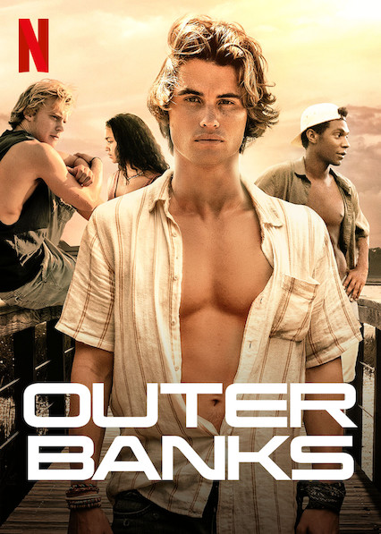
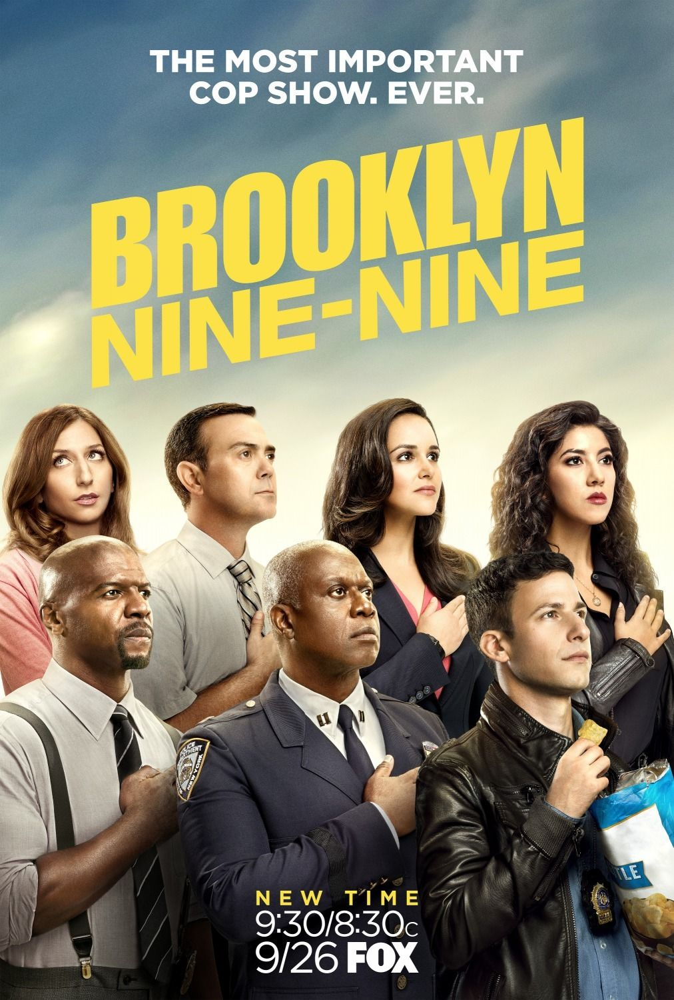

Nación Z Calificación: 4 estrellas Fecha de Estreno: 12/09/2014 Un equipo se aventura en una peligrosa misión para transportar al único sobreviviente de un mortífero virus zombi, con la esperanza de que tenga la clave para una vacuna. Género: Terror Favoritos Outer Banks  Calificación: 5 estrellas Fecha de Estreno: 15/04/2020 Un adolescente recluta a sus tres mejores amigos para buscar un tesoro legendario relacionado con la desaparición de su padre. Género: Acción Favoritos Bob Esponja Calificación: 5 estrellas Fecha de Estreno: 01/05/1999 Bob, una esponja cuadrada y amarilla que junto a su mejor amigo Patricio tienen muchas aventuras en el Fondo de Bikini, la ciudad en la que viven, en el fondo del mar Género: Infantiles Favoritos Brooklyn 99  Calificación: 5 estrellas Fecha de Estreno: 17/09/2013 Los detectives Jake Peralta, Amy Santiago, Rosa Diaz y la sargento Terry Jeffords son unos policías talentosos, sin preocupaciones y con el mejor registro de arrestos, hasta que llega a la estación policial el nuevo jefe Raymond Holt. Género: Comedia Favoritos Emily en Paris Calificación: 4 estrellas Fecha de Estreno: 02/10/2020 Emily Cooper, una joven ejecutiva de marketing de Chicago, es contratada para proporcionar una perspectiva estadounidense en una empresa de marketing en París. Género: Romance Favoritos